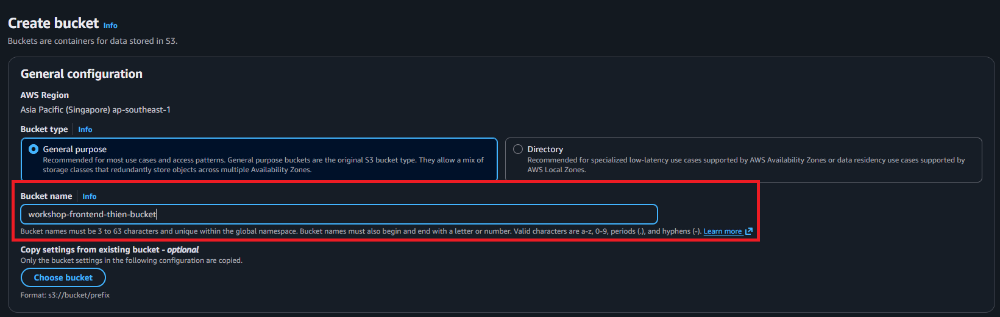
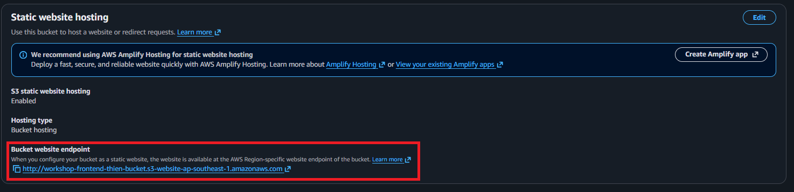
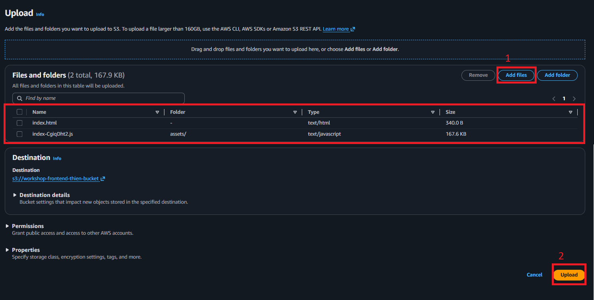
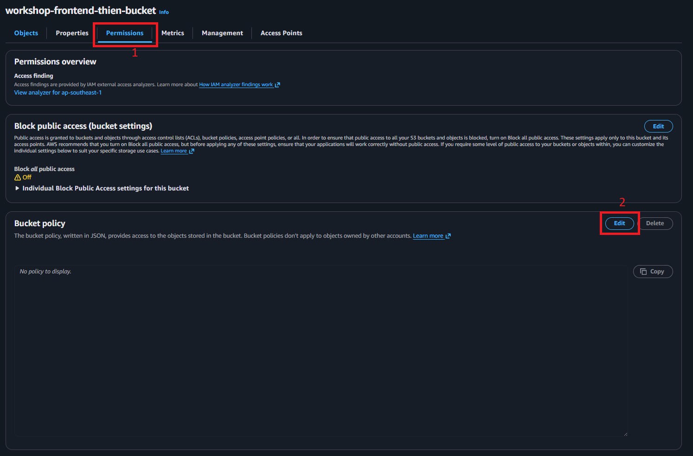
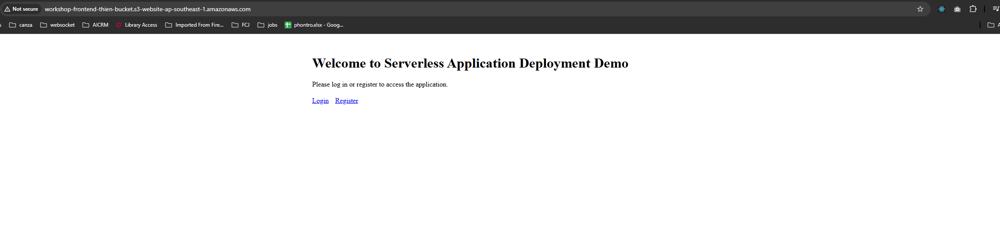

Part 1: S3 Static Website Hosting
Tổng quan
Trong phần này, bạn sẽ thiết lập Amazon S3 để lưu trữ trang web tĩnh của mình. S3 (Simple Storage Service) cung cấp giải pháp tiết kiệm chi phí và có độ bền cao để lưu trữ nội dung tĩnh như HTML, CSS, JavaScript và hình ảnh.
Những gì bạn sẽ hoàn thành:
- Clone repository ứng dụng mẫu
- Build ứng dụng frontend
- Tạo và cấu hình S3 bucket
- Upload các tệp website lên S3
- Bật static website hosting
- Kiểm tra website của bạn
Thời gian ước tính: 30 phút
Cân nhắc về chi phí
Free-tier:
- S3 không có lợi ích free-tier
Paid-tier
- Ngay cả paid tier chi phí cũng rất nhỏ cho workshop của chúng ta
- Tổng thể: <$0 (dọn dẹp ngay sau khi hoàn thành workshop)
Bước 1: Chuẩn bị ứng dụng của bạn
1.1 Clone Sample Repository
Mở terminal hoặc command prompt và chạy:
git clone https://github.com/Icyretsz/fcj-serverless-workshop.git
1.2 Install Dependencies
Ứng dụng mẫu sử dụng Node.js và npm. Cài đặt các dependencies cần thiết:
npm install
Khắc phục sự cố:
- Nếu bạn chưa cài đặt Node.js, tải về từ https://nodejs.org/ (khuyến nghị phiên bản LTS)
- Xác minh cài đặt:
node --versionvànpm --version - Phiên bản tối thiểu yêu cầu: Node.js 16.x trở lên
1.3 Build Application
Điều hướng đến thư mục frontend và build phiên bản sẵn sàng cho production:
cd frontend
npm run build
Lệnh sẽ:
- Quá trình build biên dịch mã nguồn của bạn
- Tối ưu hóa assets cho production (minification, bundling)
- Tạo thư mục
dist/với tất cả các tệp có thể triển khai
1.4 Verify Build Output
Kiểm tra nội dung của thư mục build:
ls -la dist/
Bạn sẽ thấy:
dist/
├── index.html
├── favicon.ico
├── static/
│ ├── css/
│ │ └── main.def456.css
│ └── js/
│ └── main.abc123.js
└── assets/
└── images/
Bước 2: Tạo S3 Bucket
2.1 Navigate to S3 Console
- Đăng nhập vào AWS Management Console
- Trong thanh tìm kiếm ở trên cùng, gõ “S3”
- Click vào S3 trong Services

2.2 Create New Bucket
- Click nút Create bucket
- Cấu hình các thiết lập sau:
General Configuration:
- Bucket name:
workshop-frontend-[your-name]-[random-string]- Ví dụ:
workshop-frontend-john-a1b2c3 - Phải là duy nhất toàn cầu trên tất cả các tài khoản AWS
- Chỉ sử dụng chữ thường, số và dấu gạch ngang
- Lưu ý: Ghi lại tên bucket của bạn - bạn sẽ cần nó trong suốt workshop
- Ví dụ:

2.3 Configure Bucket Settings
Object Ownership:
- Giữ mặc định: ACLs disabled (recommended)
Block Public Access settings:
- BỎ CHỌN “Block all public access”
- Chọn hộp xác nhận: “I acknowledge that the current settings might result in this bucket and the objects within becoming public”
⚠️ Lưu ý bảo mật: Chúng ta đang làm cho bucket này công khai để lưu trữ website. Trong production, bạn sẽ sử dụng CloudFront để truy cập bucket một cách riêng tư, điều mà chúng ta sẽ cấu hình trong Part 2.

Bucket Versioning:
- Giữ mặc định: Disable
Tags (Tùy chọn nhưng khuyến nghị):
- Key:
Project, Value:ServerlessWorkshop - Key:
Workshop, Value:Frontend
Default encryption:
- Giữ mặc định: Server-side encryption with Amazon S3 managed keys (SSE-S3)
Advanced settings:
- Giữ tất cả mặc định
2.4 Create the Bucket
- Cuộn xuống dưới cùng và click Create bucket
- Bạn sẽ thấy thông báo thành công: “Successfully created bucket ‘workshop-frontend-[your-name]-[random-string]’”
Bước 3: Cấu hình Static Website Hosting
3.1 Enable Website Hosting
- Click vào tên bucket mới tạo của bạn
- Điều hướng đến tab Properties
- Cuộn xuống phần Static website hosting
- Click Edit

3.2 Configure Hosting Settings
Static website hosting:
- Chọn Enable
Hosting type:
- Chọn Host a static website
Index document:
- Nhập:
index.html
Error document (Tùy chọn):
- Nhập:
index.html- Điều này cho phép client-side routing hoạt động đúng cách (cho các ứng dụng React, Vue, Angular)

- Click Save changes
3.3 View website endpoint
- Cuộn xuống phần Static website hosting
- Copy Bucket website endpoint URL
- Ví dụ:
http://workshop-frontend-john-a1b2c3.s3-website-us-east-1.amazonaws.com - Lưu URL này - bạn sẽ sử dụng nó để kiểm tra website
- Ví dụ:

Bước 4: Upload các tệp Website
4.1 Upload via AWS Console
- Điều hướng đến tab Objects trong bucket của bạn
- Click Upload

4.2 Add Files
Option A: Drag and Drop
- Mở file explorer/finder của bạn
- Điều hướng đến thư mục
frontend/dist/của bạn - Chọn TẤT CẢ các tệp và thư mục bên trong thư mục build
- Kéo chúng vào khu vực upload
Option B: Browse Files
- Click Add files và Add folder
- Điều hướng đến
frontend/dist/ - Chọn tất cả nội dung
⚠️ Quan trọng: Upload nội dung của thư mục dist, không phải chính thư mục dist. Thư mục gốc S3 bucket của bạn phải có index.html ở cấp cao nhất.

4.3 Configure Upload Settings
Permissions:
- Giữ mặc định (kế thừa từ bucket)
Properties:
- Giữ mặc định
Storage class:
- Giữ mặc định: Standard
4.4 Complete Upload
- Cuộn xuống và click Upload
- Đợi quá trình upload hoàn tất
- Bạn sẽ thấy “Upload succeeded” với danh sách các tệp đã upload
- Click Close

4.5 Verify Upload
Quay lại bucket của bạn, bạn sẽ thấy:
index.htmlfavicon.ico- Thư mục
static/ - Thư mục
assets/(nếu có)
Bước 5: Cấu hình Bucket Policy cho Public Access
5.1 Create Bucket Policy
- Điều hướng đến tab Permissions
- Cuộn xuống phần Bucket policy
- Click Edit

5.2 Add Policy JSON
Copy và paste policy sau, thay thế YOUR-BUCKET-NAME bằng tên bucket thực tế của bạn:
{
"Version": "2012-10-17",
"Statement": [
{
"Sid": "PublicReadGetObject",
"Effect": "Allow",
"Principal": "*",
"Action": "s3:GetObject",
"Resource": "arn:aws:s3:::YOUR-BUCKET-NAME/*"
}
]
}
Ví dụ với tên bucket thực tế:
{
"Version": "2012-10-17",
"Statement": [
{
"Sid": "PublicReadGetObject",
"Effect": "Allow",
"Principal": "*",
"Action": "s3:GetObject",
"Resource": "arn:aws:s3:::workshop-frontend-thien-bucket/*"
}
]
}
Policy này làm gì:
- Cho phép bất kỳ ai (
"Principal": "*") đọc (s3:GetObject) bất kỳ object nào trong bucket của bạn - Bắt buộc cho public website hosting

5.3 Save Policy
- Click Save changes
Bước 6: Kiểm tra Website của bạn
6.1 Access Your Website
- Sử dụng Bucket website endpoint URL bạn đã lưu trước đó
- Mở nó trong trình duyệt web của bạn
- Ví dụ:
http://workshop-frontend-john-a1b2c3.s3-website-us-east-1.amazonaws.com
Kết quả mong đợi:
- Website tải thành công
- Bạn sẽ thấy trang chủ của ứng dụng

6.2 Test Navigation
- Click qua các trang khác nhau của ứng dụng
- Xác minh hình ảnh và styles tải đúng cách
- Kiểm tra browser developer console để tìm lỗi (F12 hoặc right-click → Inspect)
6.3 Test Direct Object Access
Bạn cũng có thể truy cập trực tiếp các tệp riêng lẻ:
http://your-bucket-endpoint/index.htmlhttp://your-bucket-endpoint/css/main.def456.css
Khắc phục sự cố
Vấn đề: Lỗi “403 Forbidden”
Nguyên nhân: Bucket policy không được cấu hình đúng hoặc bucket không công khai
Giải pháp:
- Xác minh bucket policy đúng và đã lưu
- Kiểm tra “Block all public access” đã bị vô hiệu hóa
- Đảm bảo Resource ARN trong policy khớp với tên bucket của bạn
- Xóa cache trình duyệt và thử lại
Vấn đề: Lỗi “404 Not Found”
Nguyên nhân: Tệp không được upload hoặc URL không đúng
Giải pháp:
- Xác minh các tệp ở thư mục gốc bucket (không trong thư mục con)
- Kiểm tra
index.htmltồn tại ở thư mục gốc bucket - Xác minh website endpoint URL đúng
- Thử truy cập
http://your-endpoint/index.htmltrực tiếp
Vấn đề: Styles hoặc JavaScript không tải
Nguyên nhân: Content types không đúng hoặc đường dẫn tệp sai
Giải pháp:
- Kiểm tra browser console để tìm lỗi 404
- Xác minh đường dẫn tệp trong HTML khớp với cấu trúc đã upload
- Nếu sử dụng CLI, đảm bảo content types được đặt đúng
- Kiểm tra tất cả các tệp từ thư mục build đã được upload
Vấn đề: “Bucket name already exists”
Nguyên nhân: Tên S3 bucket là duy nhất toàn cầu
Giải pháp:
- Chọn tên bucket khác
- Thêm nhiều ký tự ngẫu nhiên hoặc AWS account ID của bạn
- Ví dụ:
workshop-frontend-john-20241126-a1b2c3
Tóm tắt
Chúc mừng! Bạn đã thành công:
- Clone và build ứng dụng mẫu
- Tạo S3 bucket
- Cấu hình static website hosting
- Upload các tệp website của bạn
- Thiết lập public access với bucket policy
- Kiểm tra website trực tiếp
Những gì bạn đã triển khai
Website hiện đang:
- Được lưu trữ trên AWS S3
- Có thể truy cập công khai qua S3 website endpoint
- Phục vụ các tệp tĩnh (HTML, CSS, JavaScript)
- Sẵn sàng để tích hợp với CloudFront trong phần tiếp theo
Hạn chế hiện tại
Hiện tại, website:
- Chỉ sử dụng HTTP (không phải HTTPS)
- Không có CDN/caching cho người dùng toàn cầu
- Không có bảo vệ DDoS hoặc WAF
- Sử dụng URL S3 endpoint không dễ nhớ
Trong các phần tiếp theo, chúng ta sẽ giải quyết những vấn đề này bằng cách thêm CloudFront và WAF.
Các bước tiếp theo
Tiến hành Part 2: CloudFront Distribution Setup để thêm global content delivery và cải thiện hiệu suất.
Tham khảo nhanh
Tài nguyên của bạn:
- Bucket Name:
_______________________________ - Website Endpoint:
_______________________________ - Region:
_______________________________
Các lệnh hữu ích (AWS CLI):
# Cập nhật nội dung website
cd frontend
npm run build
aws s3 sync ./build/ s3://YOUR-BUCKET-NAME/ --delete
# Liệt kê nội dung bucket
aws s3 ls s3://YOUR-BUCKET-NAME/ --recursive
# Xóa tất cả objects (để dọn dẹp)
aws s3 rm s3://YOUR-BUCKET-NAME/ --recursive
Sẵn sàng tiếp tục? Hãy chuyển sang thêm CloudFront cho global content delivery!